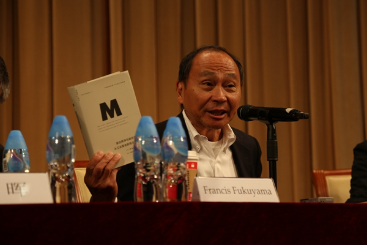
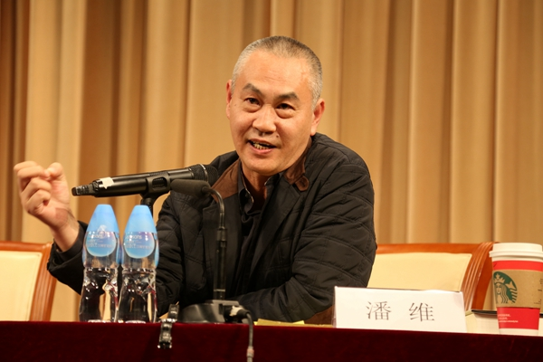

新闻动态

弗兰西斯·福山清华开讲：国家、民主与法治
阅读全文
2105年11月4日，弗兰斯西·福山（Francis Fukuyama）在蒙民伟音乐厅作题为《中国和美国的政治改革挑战》的演讲。本次演讲由清华大学人文与社会科学高等研究所主办，系“清华大学2015年度人文与社会系列讲座”第五场，清华大学汪晖教授主持，清华大学崔之元教授和北京大学潘维教授评议。
福山曾以“历史终结论”闻名全球，这种观点认为西方的自由民主政治制度和自由市场资本主义是历史演进的终点。在本次讲座中，他延续并对这一观点稍有修正。福山指出，鉴于如今中国的改革也在朝着法治的方向发展，他将着重谈谈法治问题，不过需要先简要地介绍他的最新观点。

福山认为有三个基本元素对于现代政治制度而言至关重要：国家、法治与民主。国家指一种合法地产生、利用权力来实施法律、保护国民、提供公共品的制度及其能力。法治，福山区分了rule of law 和 rule by law，前者是西方人的理解，意指法律超越于政府之上，而后者则是中国人的理解，意指政府以法律治理人民。民主，意指政府回应广大人民要求、向人民负责的制度。在这三种元素中，国家是一方，民主与法治是另一方面，后者制约前者，使前者不至于走向专制和暴政。在福山看来，现代政治制度的完善性基于这三种元素的平衡，偏失任何元素都不是好事。例如，在他看来，中国早在汉代发展出了现代国家，国家能力很强大，但却从未发展出民主与法治的强大传统，结论是，中国的政治制度是不平衡的。
福山着重谈论法治。在他看来，“rule of law” 意义上的法治，源于超越性的传统，特别是宗教传统。在这样的传统中，法的权威源于上帝，因此高于现世的政治权威。在欧洲，法治的传统深植于历史和文化之中，正是由此，才培育出现代国家。那么，中国何以没有西方所谓的那种“法治”？答案就是中国没有超越性的宗教传统，因此终归到底，还是政治权威至上。福山认为中国的政治改革还需进一步推进和完善法治，并上升到宪法的层面。相比之下，美国的问题不是法治太少，而是太多。他认为，在美国，法律对国家权力的限制过多，以致不能有效地实施集体行动，这导致了美国的国家能力的下降，此即是美国的政治衰败。典型的例子就是奥巴马政府的医疗改革的失败。总而言之，福山同意，现在中国政治改革的方向是法治，法治的完善比民主改革更重要。而对于美国，改革的方向是增强国家能力，“少一点法治”。

演讲结束后，潘维、崔之元和汪晖三位教授分别做了评议，潘维教授认为福山过于抽象地强调制度，而忽视制度与具体的历史实践的关系；崔之元教授则认为福山对中国和美国的政治问题的判断失之简单；汪晖教授则追问美国的政治危机是否能够在其内部获得解决之道。福山一一作出回应，并且回答听众的现场提问。
供稿
石岸书编辑
高研所